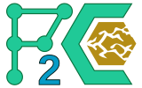

Pore2Chip
Installation
Quickstart Guide
Module Reference
Index
E
|
F
|
G
|
R
E
extract_diameters() (in module pore2chip.metrics)
extract_diameters2() (in module pore2chip.metrics)
extract_diameters_alt() (in module pore2chip.metrics)
F
feret_diameter() (in module pore2chip.metrics)
feret_diameter_list() (in module pore2chip.metrics)
filter_list() (in module pore2chip.filter_im)
filter_single() (in module pore2chip.filter_im)
G
get_percent_probability() (in module pore2chip.metrics)
get_probability_density() (in module pore2chip.metrics)
R
read_and_filter() (in module pore2chip.filter_im)
read_and_filter_list() (in module pore2chip.filter_im)